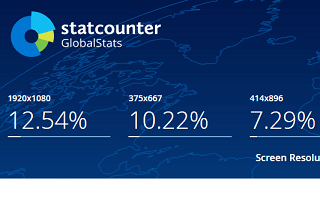

右サイドバーの幅は300pxが最適
ホームページのレイアウト幅を設定する際、具体的には何pxが最適なのでしょうか？
最終的にはサイト運営者の好みになるかもしれませんが、以下の３つの視点から設定することをおすすめします。
- 訪問者の閲覧環境に最適なwidth幅
- 広告主が選択することが多いバナーのwidth幅
- 黄金比などのウェブデザインによるwidth幅
訪問者の閲覧環境に最適なwidth幅
ひと昔前と比較すると、サイトの横幅を広めに設定しているホームページが多くなってきました。これは液晶モニターのワイド化、大型化が進んだことで、画面の解像度が大きくなってきたことが理由にあげられます。
10年以上前は15インチ程度の小型画面もありましたが、次第に20インチ程度の中型液晶モニターが多くなり、現在では23インチ前後のワイドタイプが主流になってきています。これに伴い、ホームページのレイアウト幅も広く取られるようになってきました。
現在の閲覧環境の解像度でいえば、「800×600」の環境はほとんどなくなってきており、かわりに「1920x1080」が多い傾向にあります。

その一方で、さらに小型の「375x667」や「414×896」程度の割合も多くなってきています。これはスマホやタブレット端末の普及によるものですが、ネットの閲覧環境がデスクトップPCでは大型化してはいるものの、全体として見れば、むしろ小型化してきているのかもしれません。
そのため、デスクトップPCの閲覧環境では広めのレイアウト幅に設定しつつも、レスポンシブウェブデザインでスマホなどの小型端末にも合わせた幅に最適化することをおすすめします。
広告主が選ぶことの多いバナー幅
サイトに広告を掲載する場合、広告主が作成するバナータイプにも一般的な大きさが存在します。あまりにオリジナルなレイアウト幅でホームページを設定してしまうと、掲載できる広告の選択肢が狭くなってしまう可能性があります。
広告主さまが選択されることの多いバナータイプの幅に合わせ、広告を掲載しやすい形で設定するのも重要なポイントといえるでしょう。
ウェブデザイン面からの設定方法
一方、ウェブデザインの面からいいますと、黄金比や白銀比などのキレイにみえる比率を基準に設定する方法もあります。あるいは、１行の文字数やフォントサイズ、行間などの割合から最適なpx幅を割り出すこともできるかと思います。
けれども、例えば、サイドバーとコンテンツの比率を黄金比の1：1.618で作成したとしても、サイドバーが大き目になってしまい、微妙に違和感の出る結果になると感じています。加えて、一般的な広告バナーのサイズとも相性が悪く、２コラムではあまり使えないかもしれません。
黄金比や白銀比などをウェブサイトに取り入れるのは難しいものがあると感じています。
大手サイトのサイドバーはwidth幅300pxのケースが多い
有名どころの大手のサイトを覗いてみますと、メインコラムの幅はまちまちではありますが、「サイドバーの幅が300px」という点で共通点があるようです。
■某ニュースサイト：302px
■某ニュースサイト：308px
■某ポータルサイト：310px

■某Ｙニュースサイト：300px
広告バナーの幅の関係かどうかはわかりませんが、大手サイトのプロのデザイナーがこぞって300pxで設定しているのには何等かの必然性があると考えるべきです。そのため、サイドバーの幅はとりあえず、「300px」に設定しておけばよいでしょう。
一方、メインコラムについては非常にまちまちで、２カラムの場合は「650px」前後のケースが多いようです。文字数でいえば、１行40～45文字前後になるように設定されていると思いますが、プロポーショナルフォントや等幅フォントなどのfont-familyの違い、あるいはfont-sizeによっても長さは違ってくるかもしれません。
→ font-sizeに合わせた最適なwidth幅
概ね、全体の横幅を1,000px程度に設定し、そのうちサイドバーで300px分を取り、残りの650px～700px程度をメインコンテンツや余白の部分に設定しているケースが多いと感じています。
ちなみに、iPhoneに搭載されているsafariのブラウザでは、何も指定されていないデフォルトのViewportが980pxのため、一般的なPCサイトのwidth幅を「980px」と見なし、それを縮小する形で描画しています。
これを元にすると、全体のwidth幅を980px、右サイドバーを300px、コンテンツの部分を680px、この状態で１行40～45文字前後になるよう、フォントサイズやpaddingの値を調整するのがぶなんかと思います。
もしくは、広告を掲載しない場合、サイドバーの幅を200px～220px程度に設定し、コンテンツ幅を700px以上の広めに取った方がスマートな印象があります。広告掲載のない公官庁のホームページをチェックすると、概ねサイドバーの横幅は200px前後で設定されています。
２カラム、３カラムによっても違うかと思いますが、そのあたりのwidth幅を設定しておけば、ぶなんなレイアウトのホームページが出来あがることでしょう。